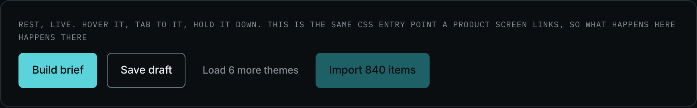
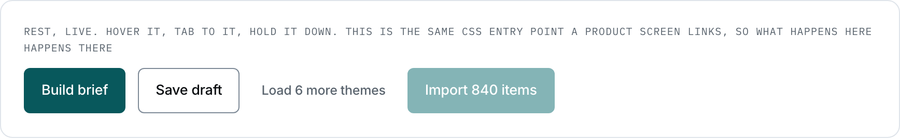
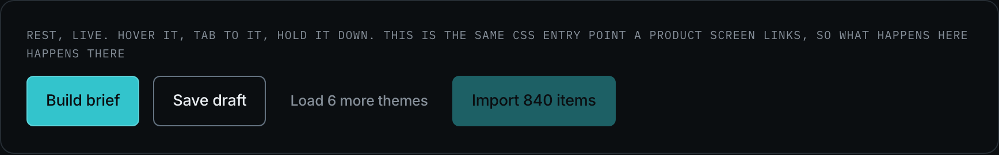
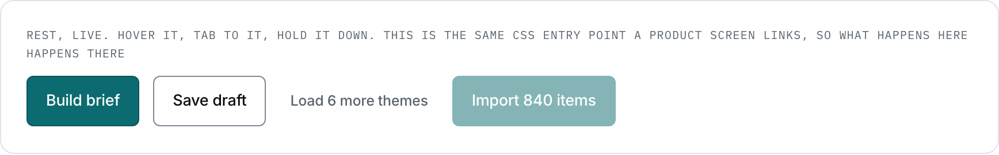
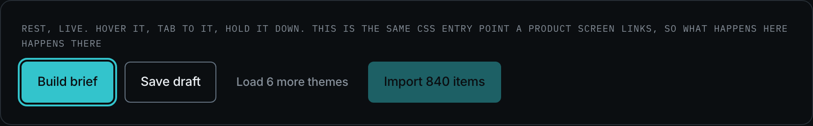
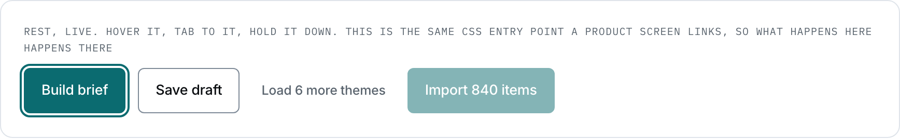
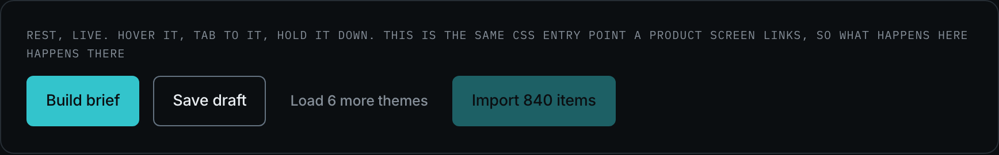

Button
The control that does something. Three emphases by two sizes, plus one content variant: six declared forms, and that is the whole set. Before the Stage 07 census the product carried two declarations and four contextual overrides on top of them, each one looking deliberate on its own screen and adding up to a family nobody had decided.
design/system/components/button.css ·
67 filled, 33 outlined, 4 bare, 13 icon-only and 11 large across all 38 screens of the
product.
Anatomy
Three zones, and two of them are optional. The label is not.
| Zone | Class or element | Rule |
|---|---|---|
| the box | .btn, .btn--ghost, .btn--bare | 44px floor, 6px radius, the one easing. Shared by all three emphases; they part on ink and ground only |
| icon, leading | svg.ic inside the button | 15px, and it means "acts here". A trailing glyph would mean "leads away from here", and this product does not use one on a button |
| label | the text node | A verb and its object, from voice/docs/microcopy.md. Never a bare "OK" |
| the hidden name | .vh inside .btn--icon | Icon-only controls keep their name for a screen reader. It is not optional |
Variants and sizes
The axes from the consolidation, with the rule that chooses on each one. A matrix without its rules is a table of facts from which everybody invents a reason again.
| Axis | Values | The rule that chooses |
|---|---|---|
| emphasis | fill 67 · outline 33 · bare 4 | One filled button per zone, and it is the next move. Two filled buttons in one zone is not a strong screen, it is a screen that has not decided |
| content | label 55 · icon plus label 12 · icon only 13 | A leading icon promises "acts here". Icon-only is for a control that repeats down a list, where a label would be read fifty times to say one thing |
| size | medium 116 · large 11 | Size is given by the density of the place, never by the importance of the action. Large exists on 0.0 alone, which is the one screen read by somebody who has not decided to read it |
| width | not an axis | 100% against auto is layout. A full-width button is the same button in a one-column container, and it takes .u-full from base.css |
| medium | large | where it stands | |
|---|---|---|---|
| fill | yes, 116 | yes, 11 | every screen. 0.0 for large |
| outline | yes | yes | 3.0, 3.2, 6.0, 6.1, 6.3, 7.2, 0.0 |
| bare | yes, 4 | empty, and it is a prohibition: a bare control has no box, so a size step would be a font size floating in a list with nothing to anchor it. Load more is the whole population of this cell | 2.0, 4.0 |
| icon only | yes, 13 | empty, and it is a prohibition: the target is already at the 44px floor, and a larger one would be a bigger hit area for a control that repeats down a list | 6.1, 6.2 |
Every number in the matrix is read from the rendered product rather than from the first declaration in the stylesheet. A class can carry two steps, and a cell that is true about the CSS and false about the screen is worse than an empty one, because it looks checked.
When to use it
A button is where the person acts, and in this product that is the whole point of the fourth design principle: one decision at a time. Every screen has exactly one primary action at rest, and the product enforces it in CSS rather than by convention: while the selection bar is up, the screen head's action is gone.
The label is a verb and its object, taken from
voice/docs/microcopy.md: "Build brief", "Import 840 items",
"Generate share link". The voice rules forbid a bare "OK", an exclamation mark, and the
word "just". A count inside a label is not decoration: "Import 840 items" tells the person
what they are about to commit to, which is the same promise the confidence indicator makes
one screen earlier.
The person meeting this control is a product manager under time pressure, often minutes before a meeting (persona D1, the Overloaded PM). That is why the filled button is reserved so hard: on a dense screen, two of them cost a decision.
Rule and anti-rule
One filled action in the zone, and it is the move the person came to make. Everything else that is a real action takes the outline.
Three filled buttons is not three important actions, it is a zone with no decision in it. The screen stops saying what to do next, which is the one thing it is for.
| If you are about to | Take instead | Why |
|---|---|---|
| use a button to go somewhere | .link, the inline text link | A button acts, a link travels. The product's breadcrumb, its footers and its legal TOC are all links, and none of them is a button that happens to navigate |
| use a bare button for "Clear filters" | .link--action | A text action with a control's target. This exact fold happened at Stage 07: the old .clear was a fourth button emphasis until the census counted it |
| make a button full width by declaring a variant | .u-full from base.css | Width is layout. The auth screen's full-width button and the composer's inline one are the same button |
| put a destructive action beside the primary one | .u-apart and the outline emphasis | The dialog on 6.3 and 3.6 holds "Disable link" and "Disconnect" apart from the confirm. A destructive action never sits where the hand is already going |
States
Four, and every one of them is a token override rather than a style. The
filled hover used to be filter: brightness(1.08), which was
the one state in this product written as a style: it is
--bg-action-hover now, and it arrived in both themes at once.
| State | Token it reads | What moves |
|---|---|---|
| hover | --bg-action-hover (fill), --line-hover and --bg-hover (outline, bare) | The ground and the line. Never the geometry: a border appearing on hover moves the neighbours by a pixel, and that is the jump |
| active | back to --bg-action / --bg-hover | The press reads as a return, not as a third colour |
| focus-visible | --line-focus, drawn once in base.css | The one ring the whole product uses. A component that redraws it is a second focus style |
| disabled | --opacity-disabled | Dimmed, never repainted by hand: the control keeps its identity and loses its weight |







Eight snapshots, and eight named
differences. Four states by two themes, taken on the whole family at once so the
delta between fill, outline and bare is visible in one frame rather than in three. A
snapshot here is a measurement and not an illustration: Step 9 checks them for byte
drift, and a snapshot nobody re-takes freezes silently, which is worse than none.
Re-take: node scripts/shoot-states.js button
The file, the tokens, the markup
| Reads | Which grows from | For |
|---|---|---|
--bg-action | --cyan-400, plate B pixel | the ground of the filled button |
--text-on-action | --grey-950 dark, --grey-000 light | the ink ON it. Its own role, not the page colour: a theme that lightens the page must not lighten this |
--bg-action-hover | --cyan-300 dark, --cyan-800 light | the hover of the filled button. The pair moves in opposite directions |
--line-control | --grey-600 | the boundary of the outlined button. Raised at the Step 4 review to clear 3:1 |
--line-hover, --bg-hover | --grey-400, --grey-900 | outline and bare, under the pointer |
--opacity-disabled | 0.45 dark, 0.50 light | disabled. Not a colour |
<button class="btn">Build brief</button> <button class="btn--ghost">Save draft</button> <div class="list-foot"><button class="btn--bare">Load 6 more themes</button></div> <button class="btn--icon"><svg class="ic"><use href="#i-close"></use></svg><span class="vh">Remove</span></button> <a class="btn btn--lg" href="#">Start free</a>
Stands on: 2.0 Synthesis, 3.0 Sources, 3.2 Import a CSV, 4.0 Theme detail, 6.0 Briefs, 6.1 Build brief, 6.3 Share link, 7.2 Data and privacy, 0.0 Home.